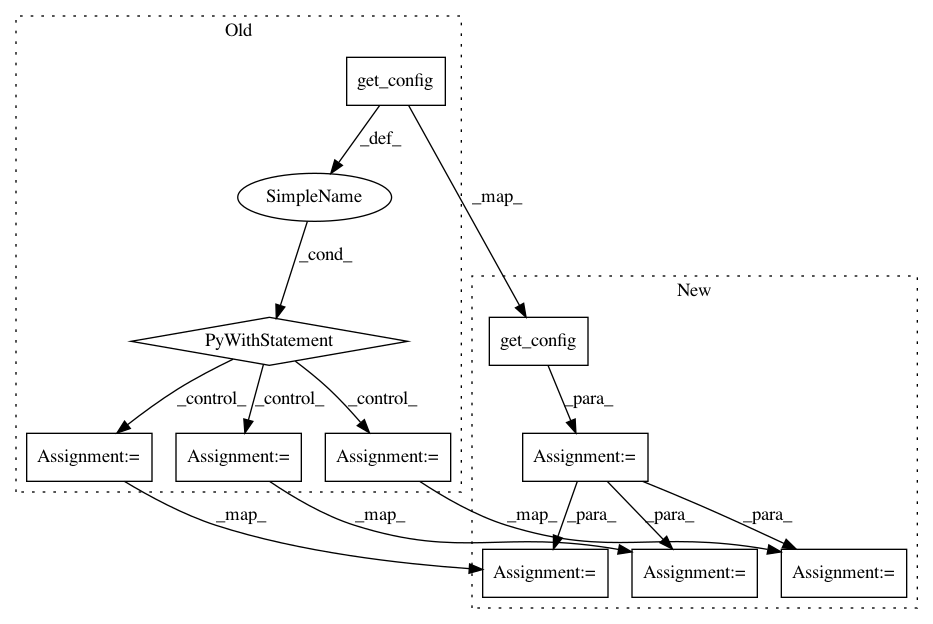

0d9505e7a5262ab1723a708074c74ea1b4b5232b,utils/train_SoSModel.py,,,#,12
Before Change
"Unable to set logging level because: {0} defaulting to INFO.".format(str(e)))
// Load info from config
with get_config() as config:
time_const = config["time constant"]
rnn_size = config["rnn size"]
labels = config["labels"]
// Path to training data
data_dir = sys.argv[1]
// Create the training data
if len(sys.argv) == 3:
data = create_dataset(data_dir, time_const)
After Change
"Unable to set logging level because: {0} defaulting to INFO.".format(str(e)))
// Load info from config
config = get_config()
time_const = config["time constant"]
rnn_size = config["rnn size"]
labels = config["labels"]
// Path to training data
data_dir = sys.argv[1]
// Create the training data
In pattern: SUPERPATTERN
Frequency: 3
Non-data size: 10
Instances
Project Name: CyberReboot/NetworkML
Commit Name: 0d9505e7a5262ab1723a708074c74ea1b4b5232b
Time: 2018-10-17
Author: clewis@iqt.org
File Name: utils/train_SoSModel.py
Class Name:
Method Name:
Project Name: CyberReboot/NetworkML
Commit Name: 0d9505e7a5262ab1723a708074c74ea1b4b5232b
Time: 2018-10-17
Author: clewis@iqt.org
File Name: utils/eval_SoSModel.py
Class Name:
Method Name:
Project Name: CyberReboot/NetworkML
Commit Name: 0d9505e7a5262ab1723a708074c74ea1b4b5232b
Time: 2018-10-17
Author: clewis@iqt.org
File Name: DeviceClassifier/OneLayer/train_OneLayer.py
Class Name:
Method Name: